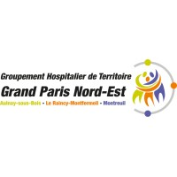
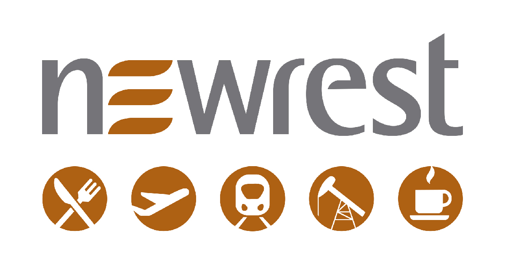
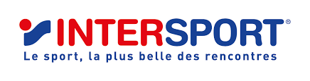

Mes Compétences

HTML

CSS

JavaScript

PHP

Développeur Web | BTS SIO SLAM
Je suis Aon Mohammad, étudiant en BTS SIO option SLAM, passionné par le développement et les nouvelles technologies. J’aime créer des projets et relever des défis techniques. J’ai obtenu un baccalauréat STMG spécialité SIG avec mention Bien. Actuellement en deuxième année de BTS SIO, je développe chaque jour de nouvelles compétences en informatique.
📄 Télécharger mon CVLycée René Descartes – Champs-sur-Marne
Lycée Wolfgang Amadeus Mozart – Le Blanc-Mesnil

Expérience n°5
J’ai effectué un stage de BTS de deux mois en tant que technicien informatique. Cette expérience m’a permis de découvrir un environnement professionnel et d’acquérir de nombreuses compétences techniques. Elle m’a permis de développer mon autonomie et ma capacité à résoudre des problématiques informatiques concrètes.
Expérience n°4
Stage de BTS d’un mois dans l’éducation avec diverses missions.

Expérience n°3
Mission en catering aérien, découverte des processus logistiques.

Expérience n°2
CDD en logistique.
Expérience n°1
Stage de découverte.
Ce projet consistait à développer un jeu nommé "Ni Oui Ni Non". Le joueur doit répondre à des questions sans dire "oui" ni "non". Le système analyse les réponses et détecte les incohérences lorsqu’un mensonge est réalisé. Il est alors capable d’identifier le personnage choisi au départ. Ce projet m’a permis de travailler la logique algorithmique et les interactions utilisateur.
Application web CBVEN développée en groupe permettant de réserver des logements pour l'Éducation nationale. J’ai travaillé sur la recherche, la réservation et l’interface utilisateur.
🔎 Voir le projet